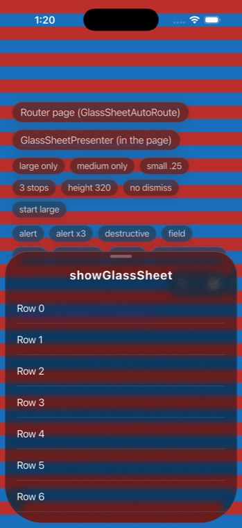

Каталог / Оверлеи: листы, диалоги, меню
GlassSheet и showGlassSheet
Лист iOS 26 с детентами: стекло на частичных высотах, непрозрачный на large; морф из кнопки.
Как выглядит



Что это
.sheet из SwiftUI с presentationDetents. Тащится вниз для закрытия, содержимое скроллится после достижения полной высоты.
Три способа показать:
showGlassSheet(context, child: ...)— из любого колбэка;GlassSheetPresenter(isPresented:, sheetChild:, child: page)— как.sheet(isPresented:);- роутер:
GlassSheetAutoRoute(auto_route) /GlassSheetPage(go_router).
Пример
final ctrl = GlassSheetController();
await showGlassSheet<void>(
context,
controller: ctrl,
detents: const [GlassSheetDetent.fraction(0.4), GlassSheetDetent.medium, GlassSheetDetent.large],
initialDetent: GlassSheetDetent.medium,
builder: (context, scroll) => ListView(controller: scroll, children: const [ListRow(title: 'One'), ListRow(title: 'Two')]),
);Детенты: medium, large, fraction(f), height(h). dismissible: false — нельзя закрыть; modal: false — страница под листом остаётся доступной.
Морф из кнопки
final origin = GlassSheetOriginController();
GlassSheetOrigin(
controller: origin,
child: GlassButton(
label: 'Открыть',
onPressed: () => showGlassSheet<void>(context, origin: origin, child: const MyContent()),
),
)Кнопка скрывается, лист начинается её формой (капсула/круг стекла), вырастает в карточку и при закрытии сжимается обратно. Подробнее — в гайде «Навигация и листы».
Параметры (из dartdoc)
GlassSheet
| Параметр | Тип | По умолчанию | Описание |
|---|---|---|---|
child | Widget? | The content. By default it sits in a scroll view that the sheet drags (so dragging the content moves the sheet and, once it is full, scrolls). | |
builder | GlassSheetBuilder? | The content as a builder that receives the scroll controller of the sheet (give it to your ListView). | |
present | Animation<double> | required | 0 (out of sight) .. 1 (in place): the slide in and out, driven by the owner. |
onDismissed | VoidCallback? | The user closed the sheet (dragged it down, tapped outside, GlassSheetController.dismiss). The owner removes it. | |
detents | List<GlassSheetDetent> | const [GlassSheetDetent.medium, GlassSheetDetent.large] | The heights the sheet rests at, smallest to largest in any order. |
initialDetent | GlassSheetDetent? | Where it opens; the first of detents when null. | |
controller | GlassSheetController? | ||
dismissible | bool | true | false: it cannot be dragged away or dismissed by a tap outside; it rests at its smallest detent at the least. |
modal | bool | true | true: a dim barrier covers the page and swallows its touches. false: the page behind stays usable around the sheet. |
showGrabber | bool | true | The drag indicator (presentationDragIndicator(.visible)). |
scrollable | bool | true | See child. |
backgroundColor | Color? | The page colour of the opaque (large) sheet. Null: the native system background of the theme. | |
dimColor | Color | const Color(0x52000000) | The dim of the page behind at the largest detent; it grows with the height of the sheet. |
liquid | bool? | Liquid glass at the partial detents. null: the theme setting (and the shader support). | |
topGap | double? | The gap between the top of the largest sheet and the top of the area. Null: the status bar inset (native: the large sheet starts right under it). | |
cornerRadius | double? | One radius for all four corners. Null (default): native. | |
inset | double | 8 | The margin of the floating card from the sides and the bottom of the screen. |
origin | GlassSheetOriginController? | The control the sheet grows out of (and shrinks back into): see GlassSheetOrigin. Null: the sheet slides up from the bottom. |
GlassSheetPresenter
| Параметр | Тип | По умолчанию | Описание |
|---|---|---|---|
child | Widget | required | The page. |
isPresented | bool | required | |
onDismissed | VoidCallback? | The user closed the sheet: set isPresented to false. | |
sheet | GlassSheetBuilder? | The content of the sheet as a builder that gets the scroll controller of the sheet. | |
sheetChild | Widget? | The content of the sheet as a widget. | |
detents | List<GlassSheetDetent> | const [GlassSheetDetent.medium, GlassSheetDetent.large] | |
initialDetent | GlassSheetDetent? | ||
controller | GlassSheetController? | ||
dismissible | bool | true | |
modal | bool | true | |
showGrabber | bool | true | |
scrollable | bool | true | |
backgroundColor | Color? | ||
dimColor | Color | const Color(0x52000000) | |
liquid | bool? | ||
topGap | double? | ||
cornerRadius | double? | ||
inset | double | 8 | |
origin | GlassSheetOriginController? | The control the sheet grows out of, see GlassSheetOrigin. |
Импорт: import 'package:swiftuikit/swiftuikit.dart';